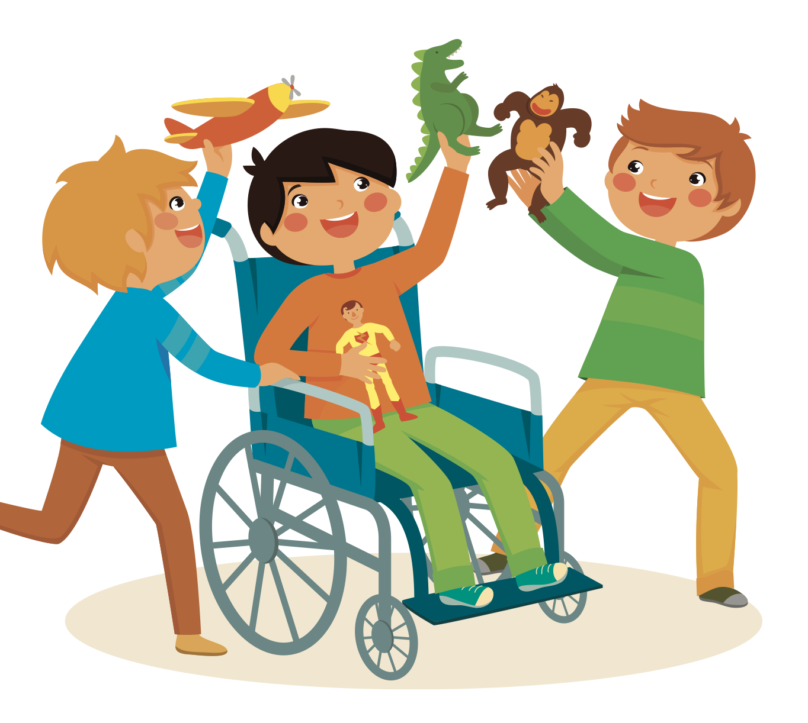
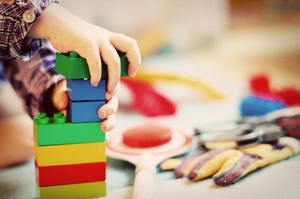
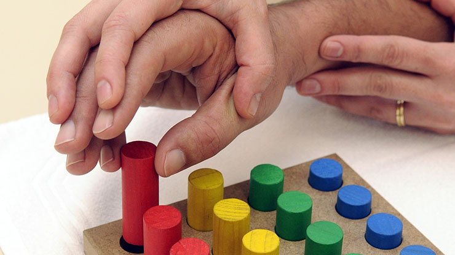

Séance sur RDV
Présentation
-
Diplômes et formations
- Formation à l’ ABA (Analyse Appliquée du Comportement) fonctionnel niveau 1
- Formation PECS niveau 1 (Système de Communication par Échange d’Image)
- Formatrice PRAP 2S (Prévention des Risques liés à l'Activité Physique dans le secteur Sanitaire et Social)
- Attestation d’acteur ETP (Éducation Thérapeutique du Patient)
- Formée à la LSVTBIG (méthode de rééducation intensive pour maladie de Parkinson et troubles neurologiques)
- Diplômée de l'institut de Formation en Ergothérapie de Montpellier en 2017
-
Expériences notables
- Janvier 2020: Ouverture de mon cabinet d'ergothérapie au Cannet
- Juin 2018 - Décembre 2019: Collaboratrice au sein du cabinet d'ergothérapie Riviera Ostéo à Antibes avec Julien Navarre
- Septembre 2017 : Début de l'activité libérale
Expérience en :
- UNV (Unité Neuro-Vasculaire)
- EHPAD (Établissement d'Hébergement pour Personnes Âgées Dépendante)
- PASA (Pôles d'Activitées et de Soins Adapté)
- MAS (maison d'accueil spécialisées)
- FAM (Foyer d'accueil médicalisé)
- SSR (Soins de Suite de Réadaptation)
Qu'est-ce que l'ergothérapie ?
L'ergothérapie est une profession paramédicale dont l'objectif est de maintenir, de restaurer et de permettre les activités de manière sécurisée, autonome et efficace.
Vos activités sont le reflet de ce que vous êtes et elles donnent du sens à la vie. Si vous êtes incapable d'accomplir les choses que vous souhaitez ou devez réaliser, votre bien-être général et donc votre santé en seront affectés. Les occupations d'une personne se retrouvent ainsi étroitement liées à sa qualité de vie et au sens donné à son existence !
L'ergothérapie (occupational therapy) vous permet de résoudre les problèmes qui vous empêchent d'accomplir les choses qui vous tiennent à cœur. Si une blessure, une maladie, une déficience ou un autre problème limite vos capacités :
- de travailler, d'étudier
- d'effectuer vos soins personnels
- de vous déplacer, de communiquer, de vous divertir
- de réaliser toutes les tâches qui vous sont propres
Alors un ergothérapeute peut trouver avec vous des solutions pour relever le défi du quotidien, faire disparaître les barrières et vous permettre d'agir, de retrouver votre rôle social et ainsi de mener une vie satisfaisante.
L'ergothérapeute examine non seulement les effets physiques d'une lésion ou d'une maladie, mais il se penche également sur les facteurs psychosociaux et environnementaux qui influencent votre capacité d'agir.
Par le biais d'entrevues, d'évaluations et de mises en situations concrètes, l'ergothérapeute obtient des informations au niveau de vos atouts et de vos faiblesses. Il recueille également des renseignements sur la manière dont vos activités se déroulent et sur le contexte environnemental dans lequel elles s'exercent. Enfin, il s'enquiert de vos rôles sociaux et tâches particulières en ce qui concerne les soins personnels, la vie domestique, l'école, les loisirs, la famille et le travail.
D’après l’Association Nationale Française des Ergothérapeutes.
Pour qui ?
L’ergothérapeute intervient à tous moments de la vie : enfants, adultes, personnes âgées. Il est conseillé de voir un ergothérapeute dès lors que certaines activités de la vie quotidienne sont difficiles à réaliser. Que ce soit pour :
- des personnes avançant en âge
- des personnes pratiquant des activités à risque
- des enfants ayant des troubles du développement et des apprentissages
- des personnes présentant des déficiences acquises (maladie ou accident) ou de naissance.
Quand consulter ?
Chez l’enfant :
Il est recommandé de consulter un ergothérapeute dès le repérage ou la suspicion :

- De difficultés dans les activités de la vie quotidienne (repas, toilette, habillage…)
- De difficultés dans le comportement ludique, d’exploration et dans les interactions (peu d’intérêt pour les activités proposées, jeux atypiques…)
- De retard des acquisitions motrices (difficultés de préhension, de gestualité, de dextérité…)
- De troubles de l’intégration sensorielle (hypo/hypersensibilité)
- De difficultés d’acquisition des attendus scolaires et préscolaires (pré-graphisme, graphisme, utilisation des ustensiles de la trousse, géométrie …)
Chez l’adulte et la personne âgée :
Il est recommandé de consulter un ergothérapeute dès le repérage ou l’arrivée de difficultés dans les activités de la vie quotidienne qui peuvent être liées à un handicap de naissance, un handicap acquis, l’apparition d’une maladie ou le vieillissement normal de la personne.
Ces difficultés peuvent prendre la forme :

- De difficultés dans les activités de la vie quotidienne (s’alimenter, s’habiller seul…)
- De difficultés dans les activités productives (aller au travail, être bien positionné à son bureau, accomplir sa journée de travail…)
- De difficultés dans les activités de loisirs
- De difficultés pour accéder à son domicile (difficultés pour rentrer dans la baignoire, pour se relever des toilettes …)
- Des difficultés à accomplir ses rôles sociaux (tenir un bébé dans les bras, écrire une lettre à un proche …)
Ce listing est loin d’être exhaustif, n’hésitez pas à contacter un ergothérapeute pour savoir si vos difficultés, ou celles de votre enfant, font partie de son champ de compétences. L’ergothérapeute pourra, au besoin, vous rediriger vers d’autres professionnels.
Accompagnement ergothérapeutique
Le bilan d’ergothérapie a lieu au cabinet et a pour but de déterminer les objectifs d’accompagnement.
Pour les bilans adultes, il faut compter environ 1h30 de bilan.
Pour les bilans pédiatriques, la présence des parents est recommandée afin de déterminer ensemble les attentes de la famille et de l’enfant.
Il faut compter environ 3h de bilan au total. Ces 3h sont divisées en deux rendez-vous d’environ 1h30 chacun.
Des séances seront mises en place afin d’amener la personne vers la réalisation des objectifs préalablement fixés avec elle suite au bilan. Les séances peuvent avoir lieu à l’école, en cabinet, en institution ou à domicile dans certains cas.
Localisation

Le cabinet se situe au :
Résidence l'Estérel entrée A
100 chemin de l'Olivet
06110 le Cannet
France
Petit coup de pouce : l'entrée se situe entre l'auto-école Colette et le salon de coiffure " le salon d'Élodie"